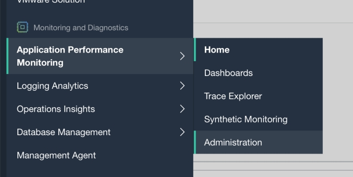
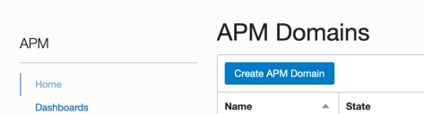
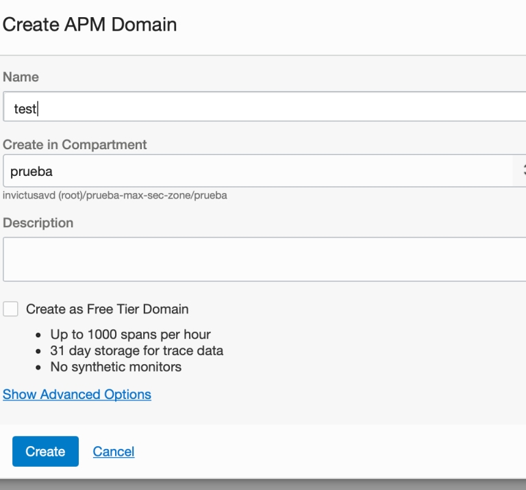
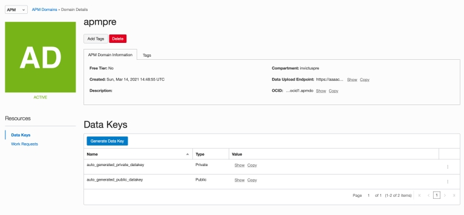
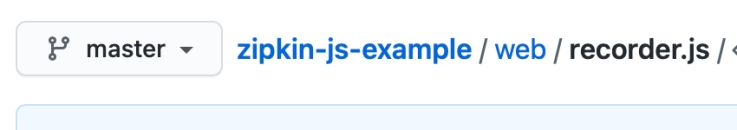
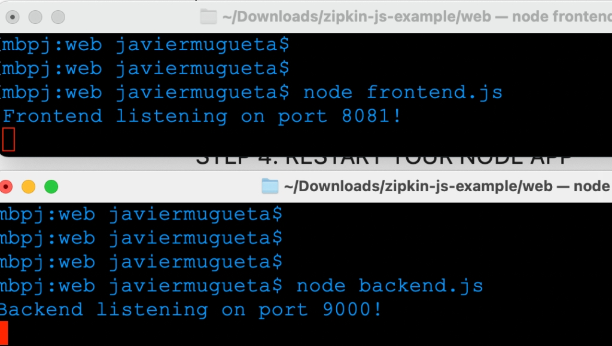
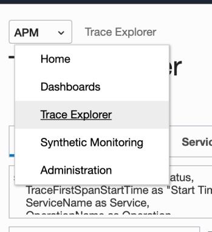
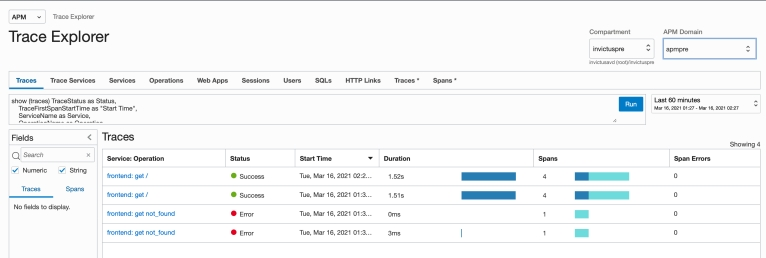

<div class="initial-content">
  <div id="main" role="main">

  <article class="page has-sidebar" itemscope itemtype="https://schema.org/CreativeWork">
    <meta itemprop="headline" content="Tracing A Node.js with OCI Application Performance Monitoring and Zipkin">
    
    <meta itemprop="datePublished" content="2022-02-25T19:42:00+00:00">
    


    <header>
      <h1 id="page-title" class="page__title" itemprop="headline">Tracing A Node.js with OCI Application Performance Monitoring and Zipkin
</h1>
      


    </header>

    <section class="page__content" itemprop="text">
      

        <p>OCI Application Performance Monitoring (APM) provides a comprehensive set of features to monitor applications and diagnose performance issues.</p>

<p>APM integrates with open-source tracing system tools (aka, open-source tracers) such as Jaeger and <strong><a href="(https://zipkin.io)">Zipkin</a></strong> allowing you to upload trace data from your application. It also supports context propagation between Application Performance Monitoring agents and open-source tracers.</p>

<p>In this tutorial, we’ll cover how to set up APM on your system, configure your Node.js for tracing, and run some sample queries using Trace Explorer.</p>

<h2 id="configure-apm">Configure APM</h2>

<ol>
  <li>Go to <strong>APM &gt; Administration</strong></li>
  <li>
    <p>Select the <strong>Create APM Domain</strong> button and provide the information requested in popup window.</p>

    <picture class="">
             <source srcset="assets/ociapmzipkinimage-92.jpg 1x" />
             
         </picture>

    <picture class="">
             <source srcset="assets/ociapmzipkinimage-93.jpg 1x" />
             
         </picture>

    <picture class="">
             <source srcset="assets/ociapmzipkinimage-94.jpg 1x" />
             
         </picture>
  </li>
</ol>

<h2 id="grab-domain-details">Grab domain details</h2>

<p>In the APM domain details you created, get the <strong>Data Upload Endpoint</strong> URL and the <strong><code class="language-plaintext highlighter-rouge">auto_generated_public_datakey</code></strong> values, we’ll need them in the next <a href="#configure-your-nodejs-app">step</a>.</p>

<picture class="">
                <source srcset="assets/ociapmzipkinimage-95.jpg 1x" />
                
            </picture>

<h2 id="configure-your-nodejs-app">Configure your Node.js app</h2>

<p>Before we get started, make sure to:</p>

<ul>
  <li><strong>Configure Zipkin for your app -</strong> Follow the steps in the <a href="https://github.com/openzipkin/zipkin-js#readme">Zipkin JS repo</a> to configure Zipkin for your app.</li>
  <li><strong>Set up OCI APM -</strong> Follow the step in this <a href="https://docs.oracle.com/en-us/iaas/application-performance-monitoring/doc/configure-open-source-tracing-systems.html">document</a> to configure tracers for OCI.</li>
</ul>

<p>For the rest of this tutorial, we’ll work with <a href="https://github.com/openzipkin/zipkin-js-example">sample code</a> in the Zipkin repo.</p>

<p>First, clone the repo and then edit the sample code as noted below.</p>

<h3 id="edit-webrecorderjs">Edit <code class="language-plaintext highlighter-rouge">web/recorder.js</code></h3>

<picture class="">
                <source srcset="assets/ociapmzipkinimage-96.jpg 1x" />
                
            </picture>

<h4 id="first-section-of-code">First section of code</h4>

<div class="language-console highlighter-rouge"><div class="highlight"><pre class="highlight"><code><span class="go">/* eslint-env browser */
const {
BatchRecorder,
jsonEncoder: {JSON_V2}
</span><span class="gp">} = require('zipkin');</span><span class="w">
</span><span class="gp">const {HttpLogger} = require('zipkin-transport-http');</span><span class="w">
</span></code></pre></div></div>

<p>Replace the last line with:</p>

<div class="language-console highlighter-rouge"><div class="highlight"><pre class="highlight"><code><span class="gp"> const CLSContext = require('zipkin-context-cls');</span><span class="w">
</span></code></pre></div></div>

<h4 id="second-section-of-code">Second section of code</h4>

<div class="language-console highlighter-rouge"><div class="highlight"><pre class="highlight"><code><span class="go">const debug = 'undefined' !== typeof window
 ? window.location.search.indexOf('debug') !== -1
</span><span class="gp"> : process.env.DEBUG;</span><span class="w">
</span></code></pre></div></div>

<h4 id="third-section-of-code">Third section of code</h4>

<div class="language-console highlighter-rouge"><div class="highlight"><pre class="highlight"><code><span class="go">// Send spans to Zipkin asynchronously over HTTP
</span><span class="gp">const zipkinBaseUrl = 'http://localhost:9411';</span><span class="w">
</span><span class="go">
// data upload endpoint example is something like https://aaaa...aaapi.apm-agt.eu-frankfurt-1.oci.oraclecloud.com/20200101/observations/public-span?dataFormat=zipkin&amp;dataFormatVersion=2&amp;dataKey=QM...3D
</span></code></pre></div></div>

<ol>
  <li>
    <p><strong>Adjust <code class="language-plaintext highlighter-rouge">BaseURL</code> -</strong> Of course, the <code class="language-plaintext highlighter-rouge">BaseURL</code> will not be a <code class="language-plaintext highlighter-rouge">localhost</code>, so replace <code class="language-plaintext highlighter-rouge">const zipkinBaseUrl = '&lt;http://localhost:9411&gt;;'</code> with:</p>

    <div class="language-console highlighter-rouge"><div class="highlight"><pre class="highlight"><code><span class="go">   const httpLogger = new HttpLogger({
</span><span class="gp">   endpoint: '&lt;domain data upload endpoint in step 2&gt;</span>/20200101/observations/public-span?dataFormat<span class="o">=</span>zipkin&amp;dataFormatVersion<span class="o">=</span>2&amp;dataKey<span class="o">=</span>&lt;public data key <span class="k">in </span>step 2&gt;<span class="s1">',
</span><span class="go">   jsonEncoder: JSON_V2
   })
</span></code></pre></div>    </div>
  </li>
  <li>
    <p><strong>Remove the logger and add a tracer -</strong></p>
    <ol>
      <li>
        <p>Remove this:</p>

        <div class="language-console highlighter-rouge"><div class="highlight"><pre class="highlight"><code><span class="go">  const httpLogger = new HttpLogger({
</span><span class="gp">    endpoint: `$</span><span class="o">{</span>zipkinBaseUrl<span class="o">}</span>/api/v2/spans<span class="sb">`</span>,
<span class="go">    jsonEncoder: JSON_V2
</span><span class="gp">  });</span><span class="w">
</span></code></pre></div>        </div>
      </li>
      <li>
        <p>And add this:</p>

        <div class="language-console highlighter-rouge"><div class="highlight"><pre class="highlight"><code><span class="go">  // Setup the tracer
  const tracer = new Tracer({
    ctxImpl: new CLSContext('zipkin'), // implicit in-process context
    recorder: new BatchRecorder({
      logger: httpLogger
    }), // batched http recorder
    localServiceName: 'mytest', // name of this application
    supportsJoin: false //Span join disable setting
</span><span class="gp">  });</span><span class="w">
</span></code></pre></div>        </div>
      </li>
    </ol>
  </li>
</ol>

<h4 id="remainder-of-code">Remainder of code</h4>

<p>A this point, the rest should look like this:</p>

<div class="language-console highlighter-rouge"><div class="highlight"><pre class="highlight"><code><span class="go">function recorder(serviceName) {
</span><span class="gp">  return debug ? debugRecorder(serviceName) : new BatchRecorder({logger: httpLogger});</span><span class="w">
</span><span class="go">}

function debugRecorder(serviceName) {
  // This is a hack that lets you see the data sent to Zipkin!
  const logger = {
</span><span class="gp">    logSpan: (span) =&gt;</span><span class="w"> </span><span class="o">{</span>
<span class="gp">      const json = JSON_V2.encode(span);</span><span class="w">
</span><span class="gp">      console.log(`$</span><span class="o">{</span>serviceName<span class="o">}</span> reporting: <span class="k">${</span><span class="nv">json</span><span class="k">}</span><span class="sb">`</span><span class="o">)</span><span class="p">;</span>
<span class="gp">      httpLogger.logSpan(span);</span><span class="w">
</span><span class="go">    }
</span><span class="gp">  };</span><span class="w">
</span><span class="go">
</span><span class="gp">  const batchRecorder = new BatchRecorder({logger});</span><span class="w">
</span><span class="go">
  // This is a hack that lets you see which annotations become which spans
  return ({
</span><span class="gp">    record: (rec) =&gt;</span><span class="w"> </span><span class="o">{</span>
<span class="gp">      const {spanId, traceId} = rec.traceId;</span><span class="w">
</span><span class="gp">      console.log(`$</span><span class="o">{</span>serviceName<span class="o">}</span> recording: <span class="k">${</span><span class="nv">traceId</span><span class="k">}</span>/<span class="k">${</span><span class="nv">spanId</span><span class="k">}</span> <span class="k">${</span><span class="nv">rec</span><span class="p">.annotation.toString()</span><span class="k">}</span><span class="sb">`</span><span class="o">)</span><span class="p">;</span>
<span class="gp">      batchRecorder.record(rec);</span><span class="w">
</span><span class="go">    }
</span><span class="gp">  });</span><span class="w">
</span><span class="go">}
</span><span class="gp">module.exports.recorder = recorder;</span><span class="w"> 
</span></code></pre></div></div>

<h2 id="restart-your-node-app">Restart your node app</h2>

<picture class="">
                <source srcset="assets/ociapmzipkinimage-97.jpg 1x" />
                
            </picture>

<h2 id="apm-trace-explorer">APM Trace Explorer</h2>

<p>Go to APM Trace Explorer and run a query:</p>

<picture class="">
                <source srcset="assets/ociapmzipkinimage-98.jpg 1x" />
                
            </picture>

<p>Traces can be observed in the list!</p>

<picture class="">
                <source srcset="assets/ociapmzipkinimage-91.jpg 1x" />
                
            </picture>

<h2 id="whats-next">What’s next</h2>

<p>That’s all! Quick and easy!</p>

<p>If you’re curious about the goings-on of Oracle Developers in their natural habitat, come join us in our <a href="https://oracledevrel.slack.com/join/shared_invite/zt-uffjmwh3-ksmv2ii9YxSkc6IpbokL1g#/shared-invite/email">public Slack channel</a>!</p>

<p>And don’t forget our <a href="https://signup.cloud.oracle.com/">free tier</a>, where you can try out what we just discussed.</p>

<p>To explore more information about development with Oracle products:</p>

<ul>
  <li><a href="https://developer.oracle.com/">Oracle Developers Portal</a></li>
  <li><a href="https://www.oracle.com/cloud/">Oracle Cloud Infrastructure</a></li>
</ul>

<!--- links -->


          <div class="sidebar sticky">
    <!-- <p><strong>Tags:</strong> <span class="tags">

            
            <a class="animated-link tag" href="/topics/open-source">open-source</a>
            <a class="animated-link tag" href="/topics/oci">oci</a>
            <a class="animated-link tag" href="/topics/nodejs">nodejs</a>
            </span>
    </p> -->
  


<div itemscope itemtype="https://schema.org/Person">

  

  <div class="author__content">
    
      <a href="https:/javiermugueta.blog/author/javiermugueta/"><h3 class="author__name" itemprop="name">Javier Mugueta</h3></a>
    
    
  </div>

  <div class="author__urls-wrapper">
    <ul class="author__urls social-icons">
      

      

      

      

      

      

      

      

      

      

      

      

      

      

      

      

      

      

      

      

      

      

      

      

      

      

      
    </ul>
  </div>
</div>

  
  
  

  </div>


      </section>

      <footer class="page__meta">
        
        


        

  <p class="page__date"><strong><i class="fas fa-fw fa-calendar-alt" aria-hidden="true"></i> Updated:</strong> <time datetime="2022-02-25T19:42:00+00:00">February 25, 2022</time></p>


      </footer>
    </div>

  </article>
</div>

</div>

